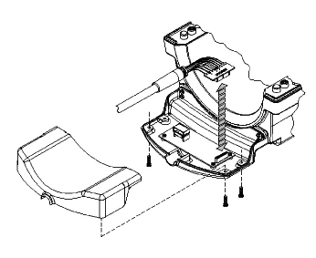

Operating Documentation
Direction 5440000, Rev# 5
Signa HDxt Service Methods
Module Version 2.0, Version Date 3/23/10
Operating Documentation |
| Required Persons | Preliminary Reqs | Procedure | Finalization |
|---|---|---|---|
| 1 | Not Applicable | 30 mins | Not Applicable |
This document contains the replacement procedure for the field replaceable units on the HD T/R Knee/Foot Coil by Invivo. The coil replacement procedure are the same for catalog M3335ME 1.5T coil and catalog M3335LP 3T coil. The field replaceable units, additional accessories, and spare kit components are listed in Field Replaceable Units and Additional Accessories.
| Item | Qty | Effectivity | Part# | Manufacturer | |
|---|---|---|---|---|---|
| For cable replacement, flat head screwdriver compatible with #6 size screws. | 1 | - | - | - | |
| For mechanical components repair, flat head screwdriver compatible for #4, #6, #10 size screws. | 1 | - | - | - | |
To be performed by an Authorized Service Engineer only!
Select the OHMMETER function on the digital multi-meter (DMM).
Illustration 1: HD System Connector (View from Cable End)

Using the DMM, verify continuity of the cable by performing the following operations on the system connector (see Illustration 1):
A continuity check from A1 to A2 pins.
A continuity check from M9 to M10 pins.
Remove six (6) brass screws from the underside of the cable connect housing and unplug cable from PCB.
Access reference points on exposed interconnect PCB.
Perform continuity checks on the following reference points from the interconnect PCB to the system connector block (see Illustration 1).
| From | To |
|---|---|
| MC-1 | C1 |
| REF LOAD | H3 |
| TX | F2 |
| PA +10 Vdc | M3 |
| MC BIAS | J1 |
| COIL ID | M7 |
| COIL ID RTN | M8 |
Flex the cable while checking to test for intermittent open and short conditions in the cable.
If the cable fails any of the tests, replace the cable assembly by contacting GE Customer Service.
If the cable passes the tests, plug the interconnect PCB back into the Preamp PCB and replace underside with the six (6) brass screws.
To be performed by an Authorized Service Engineer only!
Remove bottom screws of extended housing.
Carefully remove the top cover and place to the side.
Unseat cable from cradle and carefully remove the small PCB with 20 pin connector from large PCB.
Set cable assembly aside.
Replace with new cable assembly fully mating the 20 pin connector and socket.
Seat cable assembly into cradle and replace cover.
Ensure cable end sits level and up right.
Hand tighten screws and scan coil to ensure proper assembly.
Illustration 2: Cable Replacement

Lift the coil locks on both sides of the coil, and slide the coil from side to side.
The coil must slide freely back and forth on the base with no binding or grinding.
Lock the coil in the center of the base. Check the bottom of the base to ensure the four (4) rubber feet are tight.
Make sure that the coil latch is secure and that the base lock is fastened.
Remove #6-32 x 0.438 FHMS, brass screws, quantity 2 (Item #2) from housing and replace old draw latch with new draw latch.
Hand tighten brass screws.
Test the draw latch to ensure proper assembly.
Mate new handle and cover pieces together and fasten with #4-40 x 0.375 PHMS, brass screws.
With both handle locks in the upright position, pry one side of the handle lock from cradle on the side of the housing.
Slide old lock assembly from the T-bracket (Item #6) and replace with new lock assembly.
Place one end of the lock assembly into the cradle of the housing and maneuver the other side into the cradle.
Test lock mechanism to ensure proper assembly.
Remove coil lock as stated in Handle and Cover: Coil Lock Replacement, Step 2 and replace T-Bracket.
Replace lock assembly per Handle and Cover: Coil Lock Replacement, Step 3 and Handle and Cover: Coil Lock Replacement, Step 4.
Test lock mechanism to ensure proper assembly.
Remove #6-32 x 0.50 PHMS, brass screw (Item #9).
Replace rubber bumper and tighten brass screw.
Refer to Table 1 for the HD T/R Quad Extremity Coil FRUs. The listed item numbers refer to the FRUs diagram (see Illustration 3).
Table 1: Field Replaceable Units
| Item | Description | GE Part # | Supplier Part # | GE Part # | Supplier Part # |
| 1.5T | 3.0T | ||||
| 1 | HD T/R Quad Extremity Assembly w/Cable | 5147225-2 | 870323 | 5147137-2 | 870324 |
| 2 | HD T/R Quad Extremity Cable Assembly | 5147225-6 | 870290 | 5147225-6 | 870290 |
| 3 | Coil Repair Kit (shown in Illustration 4 ) | 2357819-10 | 14234 | 2357819-10 | 14234 |
| 4 | Legacy Phantom | 5147225-3 | - | 5147225-3 | - |
| 5 | Legacy Positioner | 5147225-7 | - | 5147225-7 | - |
| 6 | Large Cylindrical Unified Phantom | 5342679 | - | 5342679 | - |
| 7 | Unified Phantom Positioner | 5147225-7 | - | 5147225-7 | - |
Illustration 3: Field Replaceable Units Diagram

Refer to Table 2 for the HD T/R Quad Extremity Coil additional accessories.
Table 2: Additional Accessories
| Description | GE Part # | Invivo Part # |
| Knee Pad | 2357819-3 | 14629 |
| Leg/Foot Support Pad | 2357819-4 | 14627 |
| Foot Support Pad | 2357819-5 | 14626 |
| Toe Pad | 2357819-6 | 14628 |
Refer to Table 3 for the HD T/R Quad Extremity Coil spare parts kit contents. The listed item numbers refer to the Spare Part Repair Kit diagram .
Table 3: Spare Parts Kit Contents
| Item | Description | Supplier Part # | Qty |
| 1 | Draw Latch | 20074P2 | 2 |
| 2 | #6-32 x 0.438 FHMS, Brass | 20117P25 | 4 |
| 3 | Handle, Coil Lock | 19711P1 | 2 |
| 4 | Cover, Lock Handle | 19712P1 | 2 |
| 5 | #4-40 x 0.375 PHMS, Brass | 20136P2 | 4 |
| 6 | T-Bracket | 19713P1 | 1 |
| 7 | #10-32 x 0.375 PHMS, Brass | 20136P14 | 3 |
| 8 | Rubber Bumper | 19727 | 4 |
| 9 | #6-32 x 0.50 PHMS, Brass | 20136P6 | 4 |
Illustration 4: Spare Part Repair Kit

No finalization steps.